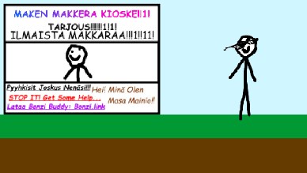
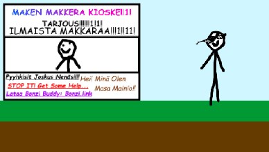

|
| Aloitus // Pelit // Linkit // The Warp Zone // Rusinat // Duckuino // Lataukset |
Maken Makkarapeli
TIEDOT
Maken Makkarapeli on hyvin yksinkertainen peli. Pelin tarina on seuraavanlainen: Make on menossa omalle makkarakioskilleen, mutta sitten hänen oma työntekijänsä ei anna hänelle omasta kioskista makkaraa. Joten painele nappuloita ja selvitä mitä tapahtuu!LATAUKSET
Lataus 1 Lataus 2SCREENSHOTS
 
